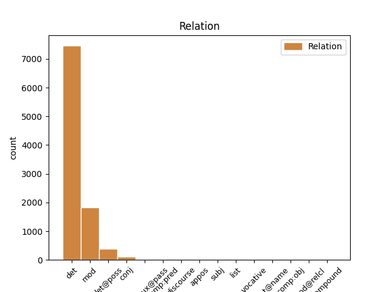
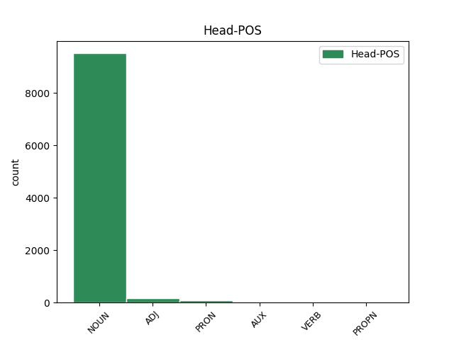
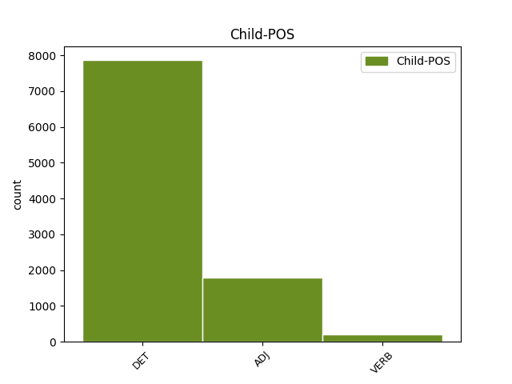

Distribution of features within this leaf



Agreement Rules sorted by frequency.
- When the dependent token is the determiner(det) of the head token, and the dependent token is DET.
1 #Grillo _ _ _ _ 0 _ _ _
2 non _ _ _ _ 0 _ _ _
3 mi _ _ _ _ 0 _ _ _
4 piace _ _ _ _ 0 _ _ _
5 , _ _ _ _ 0 _ _ _
6 ma _ _ _ _ 0 _ _ _
7 sta _ _ _ _ 0 _ _ _
8 dimostrando _ _ _ _ 0 _ _ _
9 che _ _ _ _ 0 _ _ _
10 il _ _ _ _ 0 _ _ _
11 nuovo _ _ _ _ 0 _ _ _
12 strumento _ _ _ _ 0 _ _ _
13 per _ _ _ _ 0 _ _ _
14 fare _ _ _ _ 0 _ _ _
15 #politica _ _ _ _ 0 _ _ _
16 è _ _ _ _ 0 _ _ _
17 il _ _ _ _ 0 _ _ _
18 #movimento _ _ _ _ 0 _ _ _
19 multilocale _ _ _ _ 0 _ _ _
20 e _ _ _ _ 0 _ _ _
21 non _ _ _ _ 0 _ _ _
22 il il DET RD Definite=Def|Gender=Masc|Number=Sing|PronType=Art 23 det _ _
23 partito partito NOUN S Gender=Masc|Number=Sing 0 _ _ _
24 nazionale _ _ _ _ 0 _ _ _
1 #Grillo _ _ _ _ 0 _ _ _
2 non _ _ _ _ 0 _ _ _
3 mi _ _ _ _ 0 _ _ _
4 piace _ _ _ _ 0 _ _ _
5 , _ _ _ _ 0 _ _ _
6 ma _ _ _ _ 0 _ _ _
7 sta _ _ _ _ 0 _ _ _
8 dimostrando _ _ _ _ 0 _ _ _
9 che _ _ _ _ 0 _ _ _
10 il _ _ _ _ 0 _ _ _
11 nuovo nuovo ADJ A Gender=Masc|Number=Sing 12 mod _ _
12 strumento strumento NOUN S Gender=Masc|Number=Sing 0 _ _ _
13 per _ _ _ _ 0 _ _ _
14 fare _ _ _ _ 0 _ _ _
15 #politica _ _ _ _ 0 _ _ _
16 è _ _ _ _ 0 _ _ _
17 il _ _ _ _ 0 _ _ _
18 #movimento _ _ _ _ 0 _ _ _
19 multilocale _ _ _ _ 0 _ _ _
20 e _ _ _ _ 0 _ _ _
21 non _ _ _ _ 0 _ _ _
22 il _ _ _ _ 0 _ _ _
23 partito _ _ _ _ 0 _ _ _
24 nazionale _ _ _ _ 0 _ _ _
1 Se _ _ _ _ 0 _ _ _
2 riparte _ _ _ _ 0 _ _ _
3 il _ _ _ _ 0 _ _ _
4 #Mezzogiorno _ _ _ _ 0 _ _ _
5 riparte _ _ _ _ 0 _ _ _
6 il _ _ _ _ 0 _ _ _
7 Paese _ _ _ _ 0 _ _ _
8 . _ _ _ _ 0 _ _ _
9 Il _ _ _ _ 0 _ _ _
10 mio mio DET AP Gender=Masc|Number=Sing|Poss=Yes|PronType=Prs 11 det@poss _ _
11 invito invito NOUN S Gender=Masc|Number=Sing 0 _ _ _
12 a _ _ _ _ 0 _ _ _
13 creder _ _ _ _ 0 _ _ _
14 ci _ _ _ _ 0 _ _ _
15 rivolto _ _ _ _ 0 _ _ _
16 a _ _ _ _ 0 _ _ _
17 il _ _ _ _ 0 _ _ _
18 #Governo _ _ _ _ 0 _ _ _
19 #Monti _ _ _ _ 0 _ _ _
20 fermo _ _ _ _ 0 _ _ _
21 a _ _ _ _ 0 _ _ _
22 le _ _ _ _ 0 _ _ _
23 promesse _ _ _ _ 0 _ _ _
24 http://t.co/Exc6bEeF _ _ _ _ 0 _ _ _
1 In _ _ _ _ 0 _ _ _
2 20 _ _ _ _ 0 _ _ _
3 giorni _ _ _ _ 0 _ _ _
4 la _ _ _ _ 0 _ _ _
5 fiducia _ _ _ _ 0 _ _ _
6 in _ _ _ _ 0 _ _ _
7 il _ _ _ _ 0 _ _ _
8 governo _ _ _ _ 0 _ _ _
9 #Monti _ _ _ _ 0 _ _ _
10 sale _ _ _ _ 0 _ _ _
11 di _ _ _ _ 0 _ _ _
12 5 _ _ _ _ 0 _ _ _
13 punti _ _ _ _ 0 _ _ _
14 percentuali _ _ _ _ 0 _ _ _
15 . _ _ _ _ 0 _ _ _
16 Decine _ _ _ _ 0 _ _ _
17 di _ _ _ _ 0 _ _ _
18 telegrammi telegramma NOUN S Gender=Masc|Number=Plur 0 _ _ _
19 di _ _ _ _ 0 _ _ _
20 cordoglio _ _ _ _ 0 _ _ _
21 giunti giungere VERB V Gender=Masc|Number=Plur|Tense=Past|VerbForm=Part 18 mod _ _
22 a _ _ _ _ 0 _ _ _
23 #Berlusconi _ _ _ _ 0 _ _ _
1 @user _ _ _ _ 0 _ _ _
2 imponi _ _ _ _ 0 _ _ _
3 glie _ _ _ _ 0 _ _ _
4 lo _ _ _ _ 0 _ _ _
5 xD _ _ _ _ 0 _ _ _
6 sono _ _ _ _ 0 _ _ _
7 bionderrime biondo ADJ A Degree=Abs|Gender=Fem|Number=Plur 0 _ _ _
8 e _ _ _ _ 0 _ _ _
9 bellerrime bello ADJ A Degree=Abs|Gender=Fem|Number=Plur 7 conj _ _
10 e _ _ _ _ 0 _ _ _
11 dskfhkdsjfsjsk _ _ _ _ 0 _ _ _
12 *_* _ _ _ _ 0 _ _ _
1 Il _ _ _ _ 0 _ _ _
2 pisolino _ _ _ _ 0 _ _ _
3 di _ _ _ _ 0 _ _ _
4 Scilipoti _ _ _ _ 0 _ _ _
5 E' _ _ _ _ 0 _ _ _
6 stato essere AUX VA Gender=Masc|Number=Sing|Tense=Past|VerbForm=Part 0 _ _ _
7 fotografato fotografare VERB V Gender=Masc|Number=Sing|Tense=Past|VerbForm=Part 6 comp:aux@pass _ _
8 da _ _ _ _ 0 _ _ _
9 un _ _ _ _ 0 _ _ _
10 collega _ _ _ _ 0 _ _ _
11 mentre _ _ _ _ 0 _ _ _
12 dormiva _ _ _ _ 0 _ _ _
13 su _ _ _ _ 0 _ _ _
14 il _ _ _ _ 0 _ _ _
15 divano _ _ _ _ 0 _ _ _
16 di _ _ _ _ 0 _ _ _
17 la _ _ _ _ 0 _ _ _
18 sala _ _ _ _ 0 _ _ _
19 di _ _ _ _ 0 _ _ _
20 lettura _ _ _ _ 0 _ _ _
21 di _ _ _ _ 0 _ _ _
22 ... _ _ _ _ 0 _ _ _
23 http://t.co/avF7YGJQ _ _ _ _ 0 _ _ _
1 #Grillo _ _ _ _ 0 _ _ _
2 " _ _ _ _ 0 _ _ _
3 Un _ _ _ _ 0 _ _ _
4 #debito _ _ _ _ 0 _ _ _
5 che _ _ _ _ 0 _ _ _
6 non _ _ _ _ 0 _ _ _
7 abbiamo _ _ _ _ 0 _ _ _
8 fatto _ _ _ _ 0 _ _ _
9 noi _ _ _ _ 0 _ _ _
10 . _ _ _ _ 0 _ _ _
11 " _ _ _ _ 0 _ _ _
12 Ma _ _ _ _ 0 _ _ _
13 la _ _ _ _ 0 _ _ _
14 #partitocrazia _ _ _ _ 0 _ _ _
15 chi _ _ _ _ 0 _ _ _
16 l' _ _ _ _ 0 _ _ _
17 ha _ _ _ _ 0 _ _ _
18 consentita consentire VERB V Gender=Fem|Number=Sing|Tense=Past|VerbForm=Part 0 _ _ _
19 e _ _ _ _ 0 _ _ _
20 tollerata tollerare VERB V Gender=Fem|Number=Sing|Tense=Past|VerbForm=Part 18 conj _ _
21 se _ _ _ _ 0 _ _ _
22 non _ _ _ _ 0 _ _ _
23 noi _ _ _ _ 0 _ _ _
24 ? _ _ _ _ 0 _ _ _
1 3 _ _ _ _ 0 _ _ _
2 anni _ _ _ _ 0 _ _ _
3 fà _ _ _ _ 0 _ _ _
4 ero _ _ _ _ 0 _ _ _
5 milanista _ _ _ _ 0 _ _ _
6 ... _ _ _ _ 0 _ _ _
7 Poi _ _ _ _ 0 _ _ _
8 sono _ _ _ _ 0 _ _ _
9 diventata diventare VERB V Gender=Fem|Number=Sing|Tense=Past|VerbForm=Part 0 _ _ _
10 juventina juventino ADJ A Gender=Fem|Number=Sing 9 comp:pred _ _
11 ... _ _ _ _ 0 _ _ _
12 però _ _ _ _ 0 _ _ _
13 , _ _ _ _ 0 _ _ _
14 boh _ _ _ _ 0 _ _ _
15 , _ _ _ _ 0 _ _ _
16 mi _ _ _ _ 0 _ _ _
17 sento _ _ _ _ 0 _ _ _
18 ancora _ _ _ _ 0 _ _ _
19 di _ _ _ _ 0 _ _ _
20 appartenenza _ _ _ _ 0 _ _ _
21 milanista _ _ _ _ 0 _ _ _
22 ... _ _ _ _ 0 _ _ _
23 mi _ _ _ _ 0 _ _ _
24 sento _ _ _ _ 0 _ _ _
25 il _ _ _ _ 0 _ _ _
26 sangue _ _ _ _ 0 _ _ _
27 milanista _ _ _ _ 0 _ _ _
1 Lezione lezione NOUN S Gender=Fem|Number=Sing 0 _ _ _
2 di _ _ _ _ 0 _ _ _
3 diritto _ _ _ _ 0 _ _ _
4 parlamentare _ _ _ _ 0 _ _ _
5 su _ _ _ _ 0 _ _ _
6 le _ _ _ _ 0 _ _ _
7 dimissioni _ _ _ _ 0 _ _ _
8 di _ _ _ _ 0 _ _ _
9 B. _ _ _ _ 0 _ _ _
10 e _ _ _ _ 0 _ _ _
11 su _ _ _ _ 0 _ _ _
12 il _ _ _ _ 0 _ _ _
13 governo _ _ _ _ 0 _ _ _
14 #Monti _ _ _ _ 0 _ _ _
15 , _ _ _ _ 0 _ _ _
16 l' _ _ _ _ 0 _ _ _
17 unica _ _ _ _ 0 _ _ _
18 degna degno ADJ A Gender=Fem|Number=Sing 1 appos _ _
19 di _ _ _ _ 0 _ _ _
20 essere _ _ _ _ 0 _ _ _
21 frequentata _ _ _ _ 0 _ _ _
22 , _ _ _ _ 0 _ _ _
23 grazie _ _ _ _ 0 _ _ _
24 Stefanone _ _ _ _ 0 _ _ _
25 Grassi _ _ _ _ 0 _ _ _
1 @user _ _ _ _ 0 _ _ _
2 : _ _ _ _ 0 _ _ _
3 Non _ _ _ _ 0 _ _ _
4 ho _ _ _ _ 0 _ _ _
5 sentito _ _ _ _ 0 _ _ _
6 dichiarazioni _ _ _ _ 0 _ _ _
7 Pd _ _ _ _ 0 _ _ _
8 ... _ _ _ _ 0 _ _ _
9 il _ _ _ _ 0 _ _ _
10 governo _ _ _ _ 0 _ _ _
11 Monti _ _ _ _ 0 _ _ _
12 si _ _ _ _ 0 _ _ _
13 farà _ _ _ _ 0 _ _ _
14 perché _ _ _ _ 0 _ _ _
15 a _ _ _ _ 0 _ _ _
16 qualcuno _ _ _ _ 0 _ _ _
17 faceva _ _ _ _ 0 _ _ _
18 paura _ _ _ _ 0 _ _ _
19 assumer _ _ _ _ 0 _ _ _
20 si _ _ _ _ 0 _ _ _
21 le _ _ _ _ 0 _ _ _
22 proprie proprio DET AP Gender=Fem|Number=Plur|Poss=Yes|PronType=Prs 23 mod _ _
23 responsabilità responsabilità NOUN S Gender=Fem 0 _ _ _
1 Gp _ _ _ _ 0 _ _ _
2 Bahrain _ _ _ _ 0 _ _ _
3 , _ _ _ _ 0 _ _ _
4 Rosberg _ _ _ _ 0 _ _ _
5 domina _ _ _ _ 0 _ _ _
6 seconde secondo ADJ NO Gender=Fem|Number=Plur|NumType=Ord 7 subj _ _
7 libere libero NOUN S Gender=Fem|Number=Plur 0 _ _ _
8 e _ _ _ _ 0 _ _ _
9 Ferrari _ _ _ _ 0 _ _ _
10 indietro _ _ _ _ 0 _ _ _
11 : _ _ _ _ 0 _ _ _
12 Nico _ _ _ _ 0 _ _ _
13 Rosberg _ _ _ _ 0 _ _ _
14 davanti _ _ _ _ 0 _ _ _
15 a _ _ _ _ 0 _ _ _
16 tutti _ _ _ _ 0 _ _ _
17 in _ _ _ _ 0 _ _ _
18 le _ _ _ _ 0 _ _ _
19 seconde _ _ _ _ 0 _ _ _
20 prove _ _ _ _ 0 _ _ _
21 l... _ _ _ _ 0 _ _ _
22 http://t.co/X1q6Ybbf _ _ _ _ 0 _ _ _
1 applauso applauso NOUN S Gender=Masc|Number=Sing 0 _ _ _
2 freddissimo _ _ _ _ 0 _ _ _
3 a _ _ _ _ 0 _ _ _
4 il _ _ _ _ 0 _ _ _
5 Senato _ _ _ _ 0 _ _ _
6 per _ _ _ _ 0 _ _ _
7 Mario _ _ _ _ 0 _ _ _
8 Monti _ _ _ _ 0 _ _ _
9 . _ _ _ _ 0 _ _ _
10 Ottimo ottimo ADJ A Gender=Masc|Number=Sing 1 discourse _ SpaceAfter=No
11 . _ _ _ _ 0 _ _ _
1 RT _ _ _ _ 0 _ _ _
2 @user _ _ _ _ 0 _ _ _
3 : _ _ _ _ 0 _ _ _
4 #rt _ _ _ _ 0 _ _ _
5 segui _ _ _ _ 0 _ _ _
6 mi _ _ _ _ 0 _ _ _
7 e _ _ _ _ 0 _ _ _
8 ti _ _ _ _ 0 _ _ _
9 seguo _ _ _ _ 0 _ _ _
10 in _ _ _ _ 0 _ _ _
11 più _ _ _ _ 0 _ _ _
12 ti _ _ _ _ 0 _ _ _
13 voto _ _ _ _ 0 _ _ _
14 il _ _ _ _ 0 _ _ _
15 profilo _ _ _ _ 0 _ _ _
16 in _ _ _ _ 0 _ _ _
17 : _ _ _ _ 0 _ _ _
18 🌕 _ _ _ _ 0 _ _ _
19 perfetto perfetto ADJ A Gender=Masc|Number=Sing 0 _ _ _
20 🌔 _ _ _ _ 0 _ _ _
21 bellissimo _ _ _ _ 0 _ _ _
22 🌓 _ _ _ _ 0 _ _ _
23 bello _ _ _ _ 0 _ _ _
24 🌒 _ _ _ _ 0 _ _ _
25 carino carino ADJ A Gender=Masc|Number=Sing 19 list _ _
26 🌑 _ _ _ _ 0 _ _ _
27 consiglio _ _ _ _ 0 _ _ _
28 : _ _ _ _ 0 _ _ _
29 cambia _ _ _ _ 0 _ _ _
30 lo _ _ _ _ 0 _ _ _
31 x7 _ _ _ _ 0 _ _ _
1 Governo _ _ _ _ 0 _ _ _
2 #Monti _ _ _ _ 0 _ _ _
3 : _ _ _ _ 0 _ _ _
4 la _ _ _ _ 0 _ _ _
5 fiducia _ _ _ _ 0 _ _ _
6 + _ _ _ _ 0 _ _ _
7 ampia _ _ _ _ 0 _ _ _
8 di _ _ _ _ 0 _ _ _
9 la _ _ _ _ 0 _ _ _
10 storia _ _ _ _ 0 _ _ _
11 di _ _ _ _ 0 _ _ _
12 la _ _ _ _ 0 _ _ _
13 Repubblica repubblica NOUN S Gender=Fem|Number=Sing 0 _ _ _
14 Italiana italiano ADJ A Gender=Fem|Number=Sing 13 flat@name _ _
15 da _ _ _ _ 0 _ _ _
16 il _ _ _ _ 0 _ _ _
17 peggior _ _ _ _ 0 _ _ _
18 Parlamento _ _ _ _ 0 _ _ _
19 di _ _ _ _ 0 _ _ _
20 la _ _ _ _ 0 _ _ _
21 storia _ _ _ _ 0 _ _ _
22 di _ _ _ _ 0 _ _ _
23 la _ _ _ _ 0 _ _ _
24 Repubblica _ _ _ _ 0 _ _ _
25 Italiana _ _ _ _ 0 _ _ _
26 . _ _ _ _ 0 _ _ _
27 2+2 _ _ _ _ 0 _ _ _
1 Compie _ _ _ _ 0 _ _ _
2 80 _ _ _ _ 0 _ _ _
3 anni _ _ _ _ 0 _ _ _
4 il _ _ _ _ 0 _ _ _
5 Moto _ _ _ _ 0 _ _ _
6 Club _ _ _ _ 0 _ _ _
7 di _ _ _ _ 0 _ _ _
8 Smcv _ _ _ _ 0 _ _ _
9 tra _ _ _ _ 0 _ _ _
10 i _ _ _ _ 0 _ _ _
11 20 _ _ _ _ 0 _ _ _
12 più _ _ _ _ 0 _ _ _
13 antichi _ _ _ _ 0 _ _ _
14 d' _ _ _ _ 0 _ _ _
15 Italia _ _ _ _ 0 _ _ _
16 - _ _ _ _ 0 _ _ _
17 Caserta _ _ _ _ 0 _ _ _
18 News _ _ _ _ 0 _ _ _
19 : _ _ _ _ 0 _ _ _
20 Caserta _ _ _ _ 0 _ _ _
21 NewsCompie _ _ _ _ 0 _ _ _
22 80 _ _ _ _ 0 _ _ _
23 anni anno NOUN S Gender=Masc|Number=Plur 0 _ _ _
24 il il DET RD Definite=Def|Gender=Masc|Number=Sing|PronType=Art 23 subj _ _
25 ... _ _ _ _ 0 _ _ _
26 http://t.co/C1CW5MBg _ _ _ _ 0 _ _ _
1 Però _ _ _ _ 0 _ _ _
2 tutto tutto PRON PI Gender=Masc|Number=Sing|PronType=Ind 0 _ _ _
3 sommato sommare VERB V Gender=Masc|Number=Sing|Tense=Past|VerbForm=Part 2 mod@relcl _ _
4 è _ _ _ _ 0 _ _ _
5 un _ _ _ _ 0 _ _ _
6 ragazzo _ _ _ _ 0 _ _ _
7 stra _ _ _ _ 0 _ _ _
8 carino _ _ _ _ 0 _ _ _
9 e _ _ _ _ 0 _ _ _
10 dolce _ _ _ _ 0 _ _ _
11 😕 _ _ _ _ 0 _ _ _
12 forse _ _ _ _ 0 _ _ _
13 finalmente _ _ _ _ 0 _ _ _
14 è _ _ _ _ 0 _ _ _
15 la _ _ _ _ 0 _ _ _
16 volta _ _ _ _ 0 _ _ _
17 che _ _ _ _ 0 _ _ _
18 riesco _ _ _ _ 0 _ _ _
19 a _ _ _ _ 0 _ _ _
20 voltare _ _ _ _ 0 _ _ _
21 pagina _ _ _ _ 0 _ _ _
22 .. _ _ _ _ 0 _ _ _
1 #Grillo _ _ _ _ 0 _ _ _
2 ancora _ _ _ _ 0 _ _ _
3 deve _ _ _ _ 0 _ _ _
4 diventare _ _ _ _ 0 _ _ _
5 politico _ _ _ _ 0 _ _ _
6 e _ _ _ _ 0 _ _ _
7 già _ _ _ _ 0 _ _ _
8 ha _ _ _ _ 0 _ _ _
9 preso prendere VERB V Gender=Masc|Number=Sing|Tense=Past|VerbForm=Part 0 _ _ _
10 il _ _ _ _ 0 _ _ _
11 più _ _ _ _ 0 _ _ _
12 brutto brutto ADJ A Gender=Masc|Number=Sing 9 comp:obj _ _
13 di _ _ _ _ 0 _ _ _
14 i _ _ _ _ 0 _ _ _
15 difetti _ _ _ _ 0 _ _ _
16 . _ _ _ _ 0 _ _ _
17 . _ _ _ _ 0 _ _ _
18 . _ _ _ _ 0 _ _ _
19 Non _ _ _ _ 0 _ _ _
20 rispondere _ _ _ _ 0 _ _ _
21 #serviziopubblico _ _ _ _ 0 _ _ _
1 @user _ _ _ _ 0 _ _ _
2 da _ _ _ _ 0 _ _ _
3 vere _ _ _ _ 0 _ _ _
4 pecore _ _ _ _ 0 _ _ _
5 anche _ _ _ _ 0 _ _ _
6 voi _ _ _ _ 0 _ _ _
7 . _ _ _ _ 0 _ _ _
8 Perchè _ _ _ _ 0 _ _ _
9 non _ _ _ _ 0 _ _ _
10 fate _ _ _ _ 0 _ _ _
11 un _ _ _ _ 0 _ _ _
12 post _ _ _ _ 0 _ _ _
13 intitolato intitolare VERB V Gender=Masc|Number=Sing|Tense=Past|VerbForm=Part 0 _ _ _
14 " _ _ _ _ 0 _ _ _
15 #Grillo _ _ _ _ 0 _ _ _
16 alleato alleare VERB V Gender=Masc|Number=Sing|Tense=Past|VerbForm=Part 13 comp:pred _ _
17 con _ _ _ _ 0 _ _ _
18 Rosy _ _ _ _ 0 _ _ _
19 Mauro _ _ _ _ 0 _ _ _
20 . _ _ _ _ 0 _ _ _
21 " _ _ _ _ 0 _ _ _
22 ?! _ _ _ _ 0 _ _ _
Disagree Examples:
1 Indicazioni _ _ _ _ 0 _ _ _
2 per _ _ _ _ 0 _ _ _
3 Mario _ _ _ _ 0 _ _ _
4 Monti _ _ _ _ 0 _ _ _
5 su _ _ _ _ 0 _ _ _
6 il il DET RD Definite=Def|Gender=Masc|Number=Sing|PronType=Art 7 det _ _
7 cosa cosa NOUN S Gender=Fem|Number=Sing 0 _ _ _
8 e _ _ _ _ 0 _ _ _
9 dove _ _ _ _ 0 _ _ _
10 si _ _ _ _ 0 _ _ _
11 dovrebbe _ _ _ _ 0 _ _ _
12 tagliare _ _ _ _ 0 _ _ _
13 per _ _ _ _ 0 _ _ _
14 fare _ _ _ _ 0 _ _ _
15 cassa _ _ _ _ 0 _ _ _
16 . _ _ _ _ 0 _ _ _
17 http://t.co/UtjtFDbr _ _ _ _ 0 _ _ _
1 @user _ _ _ _ 0 _ _ _
2 Ma _ _ _ _ 0 _ _ _
3 siete _ _ _ _ 0 _ _ _
4 anche _ _ _ _ 0 _ _ _
5 su _ _ _ _ 0 _ _ _
6 il _ _ _ _ 0 _ _ _
7 digitale digitale NOUN S Gender=Masc|Number=Sing 0 _ _ _
8 terrestre terrestro ADJ A Gender=Fem|Number=Sing 7 mod _ SpaceAfter=No
9 ? _ _ _ _ 0 _ _ _
10 Scusate _ _ _ _ 0 _ _ _
11 l' _ _ _ _ 0 _ _ _
12 ignoranza _ _ _ _ 0 _ _ _
13 ^^ _ _ _ _ 0 _ _ _
1 - _ _ _ _ 0 _ _ _
2 Mamma _ _ _ _ 0 _ _ _
3 domani _ _ _ _ 0 _ _ _
4 torno _ _ _ _ 0 _ _ _
5 . _ _ _ _ 0 _ _ _
6 Che _ _ _ _ 0 _ _ _
7 clima _ _ _ _ 0 _ _ _
8 c' _ _ _ _ 0 _ _ _
9 è _ _ _ _ 0 _ _ _
10 a _ _ _ _ 0 _ _ _
11 Roma _ _ _ _ 0 _ _ _
12 ? _ _ _ _ 0 _ _ _
13 Fa _ _ _ _ 0 _ _ _
14 così _ _ _ _ 0 _ _ _
15 caldo _ _ _ _ 0 _ _ _
16 ? _ _ _ _ 0 _ _ _
17 - _ _ _ _ 0 _ _ _
18 Mah _ _ _ _ 0 _ _ _
19 . _ _ _ _ 0 _ _ _
20 È _ _ _ _ 0 _ _ _
21 un _ _ _ _ 0 _ _ _
22 autunnello _ _ _ _ 0 _ _ _
23 primaveretta primavera NOUN S Gender=Fem|Number=Sing 0 _ _ _
24 caldino caldo ADJ A Gender=Masc|Number=Sing 23 mod _ _
25 caldino _ _ _ _ 0 _ _ _
26 Mia _ _ _ _ 0 _ _ _
27 madre _ _ _ _ 0 _ _ _
28 è _ _ _ _ 0 _ _ _
29 Ned _ _ _ _ 0 _ _ _
30 Flanders _ _ _ _ 0 _ _ _
31 ? _ _ _ _ 0 _ _ _
1 - _ _ _ _ 0 _ _ _
2 Mamma _ _ _ _ 0 _ _ _
3 domani _ _ _ _ 0 _ _ _
4 torno _ _ _ _ 0 _ _ _
5 . _ _ _ _ 0 _ _ _
6 Che _ _ _ _ 0 _ _ _
7 clima _ _ _ _ 0 _ _ _
8 c' _ _ _ _ 0 _ _ _
9 è _ _ _ _ 0 _ _ _
10 a _ _ _ _ 0 _ _ _
11 Roma _ _ _ _ 0 _ _ _
12 ? _ _ _ _ 0 _ _ _
13 Fa _ _ _ _ 0 _ _ _
14 così _ _ _ _ 0 _ _ _
15 caldo _ _ _ _ 0 _ _ _
16 ? _ _ _ _ 0 _ _ _
17 - _ _ _ _ 0 _ _ _
18 Mah _ _ _ _ 0 _ _ _
19 . _ _ _ _ 0 _ _ _
20 È _ _ _ _ 0 _ _ _
21 un _ _ _ _ 0 _ _ _
22 autunnello _ _ _ _ 0 _ _ _
23 primaveretta primavera NOUN S Gender=Fem|Number=Sing 0 _ _ _
24 caldino _ _ _ _ 0 _ _ _
25 caldino caldo ADJ A Gender=Masc|Number=Sing 23 mod _ _
26 Mia _ _ _ _ 0 _ _ _
27 madre _ _ _ _ 0 _ _ _
28 è _ _ _ _ 0 _ _ _
29 Ned _ _ _ _ 0 _ _ _
30 Flanders _ _ _ _ 0 _ _ _
31 ? _ _ _ _ 0 _ _ _
1 Giuliano _ _ _ _ 0 _ _ _
2 Amato _ _ _ _ 0 _ _ _
3 ministro _ _ _ _ 0 _ _ _
4 in _ _ _ _ 0 _ _ _
5 il _ _ _ _ 0 _ _ _
6 governo _ _ _ _ 0 _ _ _
7 Monti _ _ _ _ 0 _ _ _
8 ? _ _ _ _ 0 _ _ _
9 Ma _ _ _ _ 0 _ _ _
10 che _ _ _ _ 0 _ _ _
11 roba _ _ _ _ 0 _ _ _
12 è _ _ _ _ 0 _ _ _
13 l' _ _ _ _ 0 _ _ _
14 Italia _ _ _ _ 0 _ _ _
15 , _ _ _ _ 0 _ _ _
16 una uno DET RI Definite=Ind|Gender=Fem|Number=Sing|PronType=Art 17 det _ _
17 cazzo cazzo NOUN S Gender=Masc|Number=Sing 0 _ _ _
18 di _ _ _ _ 0 _ _ _
19 macchina _ _ _ _ 0 _ _ _
20 di _ _ _ _ 0 _ _ _
21 il _ _ _ _ 0 _ _ _
22 tempo _ _ _ _ 0 _ _ _
23 ? _ _ _ _ 0 _ _ _
24 Si _ _ _ _ 0 _ _ _
25 va _ _ _ _ 0 _ _ _
26 sempre _ _ _ _ 0 _ _ _
27 indietro _ _ _ _ 0 _ _ _
28 e _ _ _ _ 0 _ _ _
29 mai _ _ _ _ 0 _ _ _
30 avanti _ _ _ _ 0 _ _ _
31 . _ _ _ _ 0 _ _ _